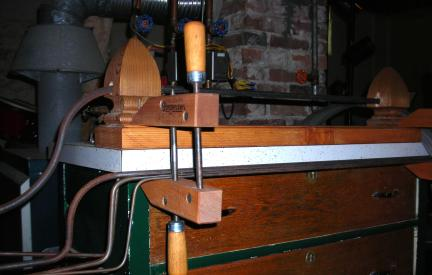
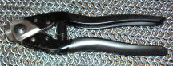
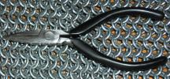

|  Mandrel: for winding most of my rings. I currently have 1/2", 7/16", 3/8", 1/4", and 3/16" diameter rods for this. For 5/32" diameter rings and smaller, I use drill bits, nails, other pieces of wire, etc. |
||
|
Aviation Snips: For cutting 14 and 16 ga wire. These were my first cutters, but sadly they have gotten a chip in the blade and are now retired. |
 New aviation snips (Wiss M5): Bought to replace the old ones. They have much better leverage. But since I got my cable cutters I don't use them much anymore. |
 Cable Cutters: These cut just about everything, 20 thru 12 ga, all base metals including stainless steel. Aren't they purdy... |
 Diagonal Cutters: for cutting 20 ga (retired since acquisition of cable cutters). Nasssty pinch cuts; I don't particularly like these anyway. |
Jeweler's Saw: For making nice straight cuts on jewelry rings. Absolutely the best closures you can get. |
 4" Chainnose pliers: For bending small links without marring them. I use these a great deal for jewelry. |
 8" Linesman's Pliers: For bending big links, mostly 16 ga and thicker. These are one of my most-used pliers. I actually have two pairs of these. |
 4" Bentnose Pliers: These are my favorite for closing small steel rings, or to complement my linesman's pliers. |
4" Chainnose pliers: These are really meant for beading wire and don't do well with heavier stuff, but they work well to close small jewelry rings without marring the metal. |
 4" Roundnose pliers: for making neat loops on clasps, etc. I really don't use these very often, but they are occasionally useful. They aren't very good pliers though; the jaws torque badly, which is no desirable trait. |
Splitring pliers: These pliers have a special hook and notch on the tips of the jaws, which allows them to open and hold splitrings. This makes them useful for scale work. |
My right hand: Unquestionably the biggest workhorse of all my tools, this one winds, cuts, and weaves every single ring. |